Computer Graphics
Approximating a boxcar-shaped function, resulting from overlapping lights, with a differentiable function.
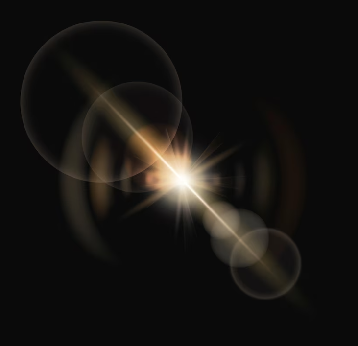
Glare is an effect by stray lights from reflection between lens barrel and sensor surface.
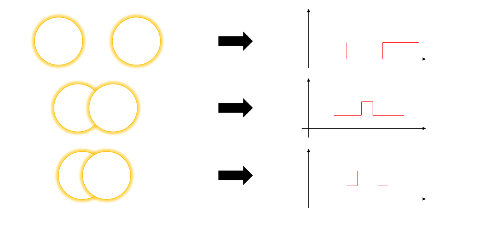
If we imagine each circle as a light with a brightness value of one, the overlapping parts will have a brightness value of two.
Let's graph this, with the x-axis representing location and the y-axis representing brightness.
The resulting function will have a box-like shape, which is not differentiable.
If it is possible to approximate the resulting function of thousands of overlapping lights with unknown positions and brightness levels by a single differentiable function,
it would allow us to create a Glare Spread Function without having to draw each individual light.
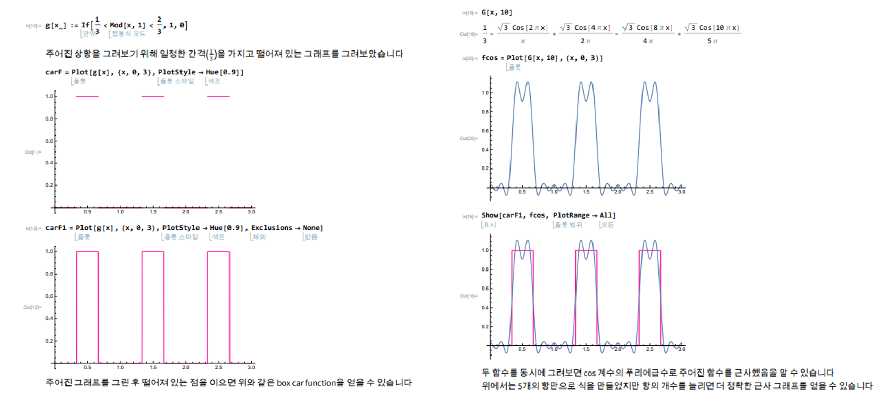
I had come up with some ideas for using the Fourier Series.
The pink graph in the lower left is the boxcar function, while the blue graph in the upper right is the graph obtained using the Fourier series.
We can see that even with only five terms, we can approximate the given function.
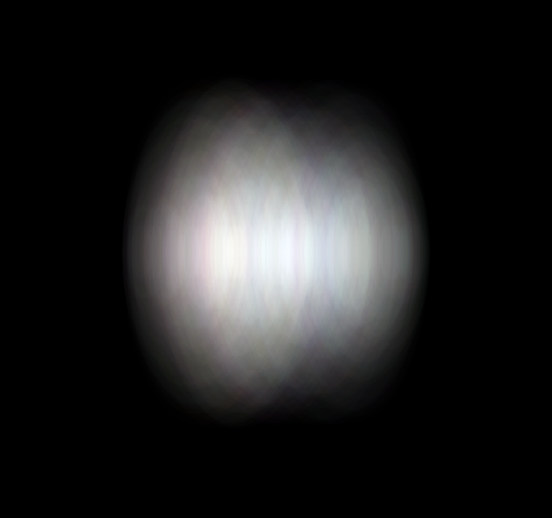
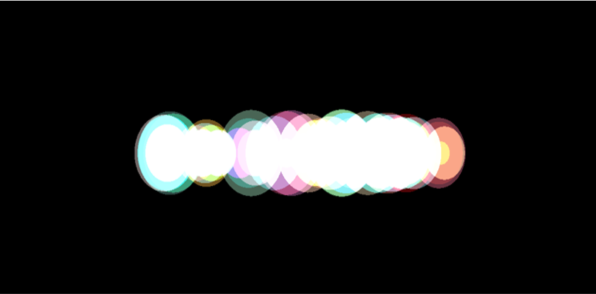
I created a glare reference using C++.
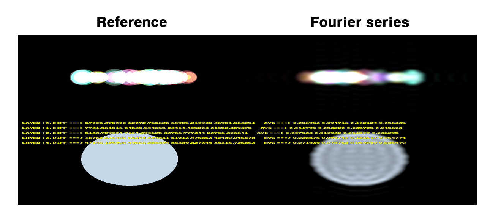
We were able to confirm that the approximation is effective when using the Fourier series.
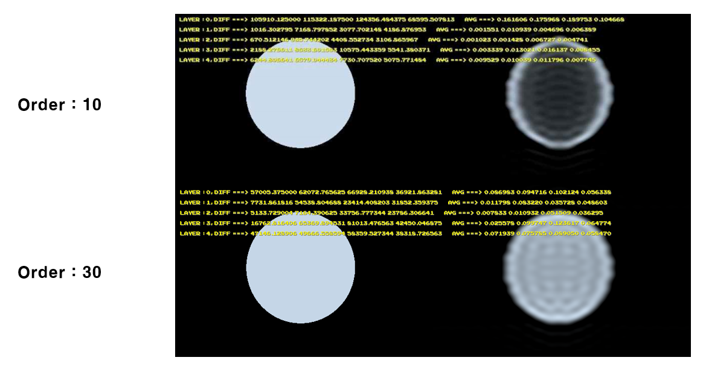
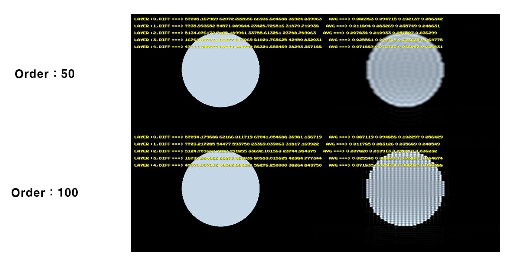
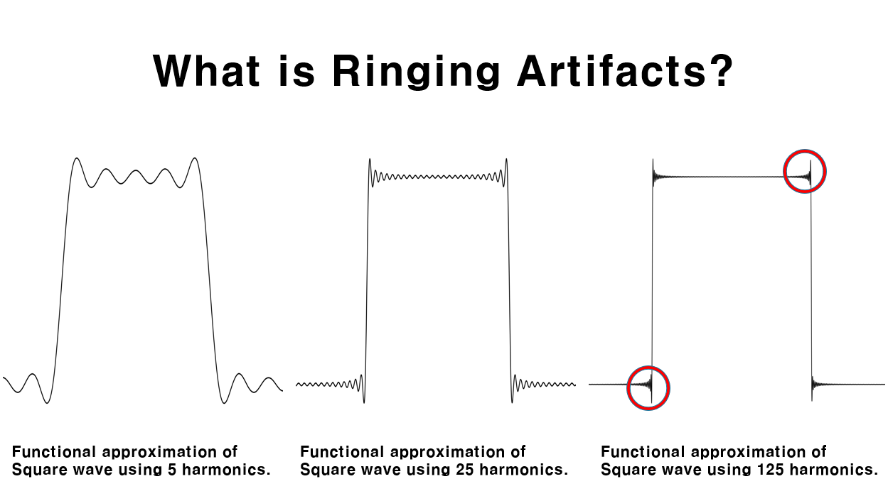
However, this also led to the inevitable ringing artifact, which is a band-like distortion caused by rapid changes in the signal.
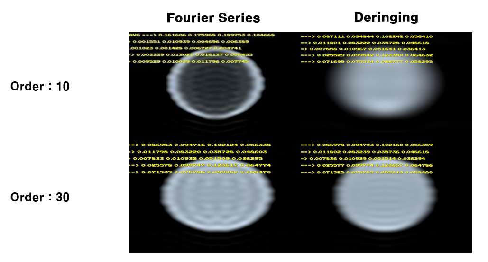
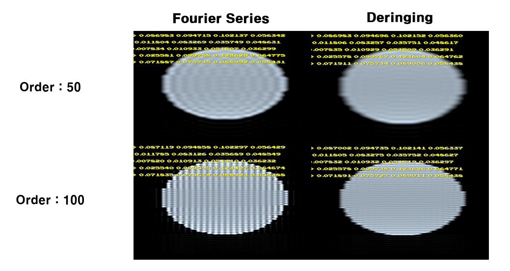
To address this, I analyzed several methods, applied the Lanczos filter, and removed the ringing pattern.
The image above shows that the pattern was removed by applying the Lanczos filter along one axis.
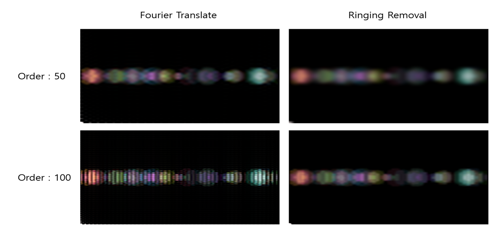
This undergraduate research experience allowed me to apply mathematical ideas to solve problems in computer science
and provided me with the opportunity to analyze, compare, and apply various mathematical methods to address specific issues.